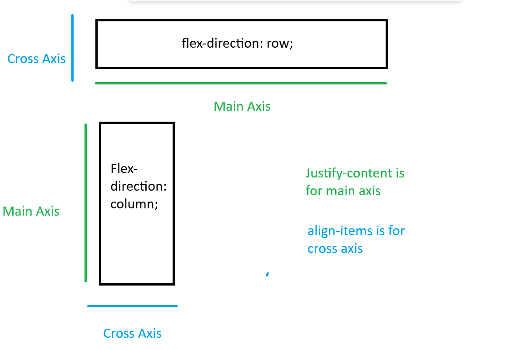
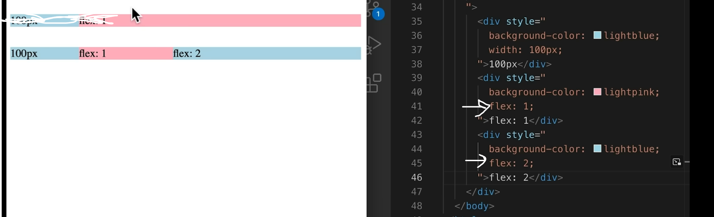

With grid we set the width of the columns first, but w/ flex boxes they
will only be as large as they need to be, they flex.
video Explanation
A div container can have a display property of flex.
The now, flex container, has control over how its immediate children are
laid out
By default the flex-direction is row
When the flex-direction is row the cross axis runs veritcally and the
main axis runs horizontally
When the flex-direction is column the cross axis runs horizontally and
the main axis runs vetically
Justify-content is for the main axis
Align-items is for the cross axis
changing item-width will change how much space the items take up

flexAxes

This is the flex box equivilent to 1fr in grid. Dictates the proportion
of remainig space to take up.
max-width will allow a flex area to grow only to that
width.
justify-content can have space-between (makes equal
space between elements), start (starting on the right), end(starting on
the left), center (in the center)
align-items can have end, start, center, stretch (will fill up entire
space)